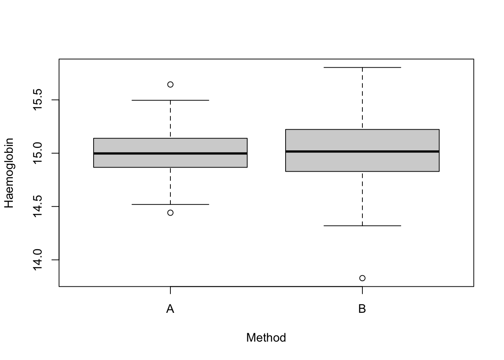

hemoglobin <- read.table("data/hemoglobin.csv",
header = TRUE, sep = ",", stringsAsFactors = TRUE
)Descriptive analysis of the hemoglobin data
Programming and Data Analysis with R
Homepage
Topics covered
- Variance and standard deviation
- Other measures of variability (range, interquartile range, MAD)
Description of the problem
We are interested in comparing the effectiveness of two different methods, called A and B, for the measurement of haemoglobin in blood.
Artificial blood containing 15 grams of haemoglobin every 100 \text{cm}^3 has been created in the laboratory.
A total of n = 360 samples were drawn from the compound.
Of these, in n_A = 180 samples the haemoglobin was measured using method A, whereas for the remaining n_B = 180 samples method B was used.
The differences between the various measurements are largely to be attributed to the measurement errors of the two different methods.
Importing the hemoglobin data
As done previously, first of all you need to download the file hemoglobin.csv and save it on your computer. Link to the file
Alternatively, we can simply obtain them using the link:
path <- "https://tommasorigon.github.io/EnvEcoStat/data/hemoglobin.csv"
hemoglobin <- read.table(path, header = TRUE, sep = ",", stringsAsFactors = TRUE)str(hemoglobin)'data.frame': 360 obs. of 2 variables:
$ hemoglobin: num 15 15.1 15.2 14.8 15 ...
$ method : Factor w/ 2 levels "A","B": 1 1 1 1 1 1 1 1 1 1 ...The option stringsAsFactors = TRUE implies that the variable method is coded as a factor and not as a character.
Preliminary operations
In this format the data are hard to analyse, at least without using the advanced *apply functions or the tools of the so-called tidyverse.
Therefore, we create the two variables hemo_A and hemo_B, containing the haemoglobin values for the two methods.
hemo_A <- hemoglobin$hemoglobin[hemoglobin$method == "A"] # Group A
hemo_B <- hemoglobin$hemoglobin[hemoglobin$method == "B"] # Group B
summary(hemo_A) Min. 1st Qu. Median Mean 3rd Qu. Max.
14.44 14.87 15.00 15.00 15.14 15.64 summary(hemo_B) Min. 1st Qu. Median Mean 3rd Qu. Max.
13.83 14.83 15.02 15.02 15.22 15.80 boxplot(hemoglobin$hemoglobin ~ hemoglobin$method,
ylab = "Haemoglobin",
xlab = "Method"
)
From these first descriptive analyses it emerges that both methods are, at least on average, well calibrated. Which of the two is preferable?
The variance I
Recall that the variance of the data x_1,\dots,x_n is equal to
\sigma^2 = \frac{1}{n}\sum_{i=1}^n (x_i - \bar{x})^2 = \left(\frac{1}{n}\sum_{i=1}^n x_i^2\right) - \bar{x}^2.
We can therefore compute the variances of the two groups “manually”:
mean((hemo_A - mean(hemo_A))^2) # Variance of group A[1] 0.0456162mean((hemo_B - mean(hemo_B))^2) # Variance of group B[1] 0.09901038mean(hemo_A^2) - mean(hemo_A)^2 # Variance of group A, alternative formula[1] 0.0456162mean(hemo_B^2) - mean(hemo_B)^2 # Variance of group B, alternative formula[1] 0.09901038Method B is therefore characterised by a larger variability.
The variance II
For convenience, we create a new function called my_var that computes the variance of a generic vector x. We will therefore have:
my_var <- function(x) {
mean(x^2) - mean(x)^2
}
my_var(hemo_A)[1] 0.0456162my_var(hemo_B)[1] 0.09901038In R the function var is available, however this computes a slightly different quantity, that is
\texttt{var(x)} = \frac{1}{n-1}\sum_{i=1}^n (x_i - \bar{x})^2,
that is the unbiased estimator of the variance.
Not clear why? It will be addressed in the part of the course devoted to statistical inference.
The variance III
The difference between my_var and var is, in practice, essentially negligible in this case, indeed:
var(hemo_A)[1] 0.04587104var(hemo_B)[1] 0.09956351Standard deviation
The standard deviation is the square root of the variance, that is \text{sd}(x) = \sigma = \sqrt{\sigma^2}.
We therefore create a suitable R function called my_sd to compute it.
Also in this case, be careful that the R command sd computes instead the value of
\texttt{sd(x)} = \sqrt{\frac{1}{n-1}\sum_{i=1}^n (x_i - \bar{x})^2}.
my_sd <- function(x) {
sqrt(my_var(x))
}
my_sd(hemo_A)[1] 0.2135795my_sd(hemo_B)[1] 0.3146591sd(hemo_A)[1] 0.2141753sd(hemo_B)[1] 0.3155369Range
The range is the difference between the minimum and the maximum of the distribution, that is (\text{``Range''}) = x_{(n)} - x_{(1)}, where x_{(1)} and x_{(n)} represent respectively the minimum and the maximum of the data.
Although a specific function to compute it does not exist, we can use the following commands
max(hemo_A) - min(hemo_A)[1] 1.20242max(hemo_B) - min(hemo_B)[1] 1.97508diff(range(hemo_A))[1] 1.20242diff(range(hemo_B))[1] 1.97508Interquartile range
The interquartile range is the difference between the third and the first quartile, that is (\text{``Interquartile range''}) = \mathcal{Q}_{0.75} - \mathcal{Q}_{0.25}.
It is much more resistant than the variance in the presence of a few extreme observations.
Its implementation in R is the following:
interquartile_range <- function(x) {
diff(quantile(x, probs = c(0.25, 0.75)))
}
interquartile_range(hemo_A) 75%
0.2699275 interquartile_range(hemo_B) 75%
0.3929925 Median absolute deviation (MAD)
The variability index MAD (Median Absolute Deviation) is defined as follows \text{MAD} = \text{Median}(|x_1 - \text{Me}_x|, \dots, |x_n - \text{Me}_x|), \qquad \text{Me}_x = \text{Median}(x_1,\dots,x_n).
To compute it, we create an appropriate function:
MAD <- function(x) {
median(abs(x - median(x)))
}The MAD of the variables hemo_A and hemo_B is therefore equal to
MAD(hemo_A)[1] 0.135795MAD(hemo_B)[1] 0.198025The tapply function I
There exists a more elegant and fast method to obtain these results, based on the function tapply.
The function tapply(x, group, fun) applies a certain function fun to a set of data x, for each group group.
For example, the arithmetic mean of hemo_A and hemo_B is obtained as follows:
tapply(hemoglobin$hemoglobin, hemoglobin$method, mean) A B
15.00289 15.02171 with(hemoglobin, tapply(hemoglobin, method, mean)) # Even more compactly A B
15.00289 15.02171 The tapply function II
Therefore, we can obtain the various variability indices as follows:
tab <- rbind(
with(hemoglobin, tapply(hemoglobin, method, my_var)),
with(hemoglobin, tapply(hemoglobin, method, my_sd)),
with(hemoglobin, tapply(hemoglobin, method, interquartile_range)),
with(hemoglobin, tapply(hemoglobin, method, MAD))
)
rownames(tab) <- c("Variance", "Standard deviation", "Interquartile range", "MAD")
tab A B
Variance 0.0456162 0.09901038
Standard deviation 0.2135795 0.31465915
Interquartile range 0.2699275 0.39299250
MAD 0.1357950 0.19802500Summary exercise
The most commonly used measure of skewness is the so-called standardised skewness index of Pearson, defined as \gamma = \frac{1}{\text{sd}(x)^3} \frac{1}{n} \sum_{i=1}^n (x_i - \bar{x})^3 = \frac{1}{n} \sum_{i=1}^n \left(\frac{x_i - \bar{x}}{\sigma}\right)^3.
- Create a suitable function to compute it.
Solution of the summary exercise
# First possible implementation
asym <- function(x) {
sdev <- sqrt(mean(x^2) - mean(x)^2)
mean((x - mean(x))^3) / sdev^3
}
# (Slightly) alternative implementation
asym <- function(x) {
sdev <- sqrt(mean(x^2) - mean(x)^2)
z <- (x - mean(x)) / sdev
mean(z^3)
}
asym(hemo_A)[1] 0.09535216